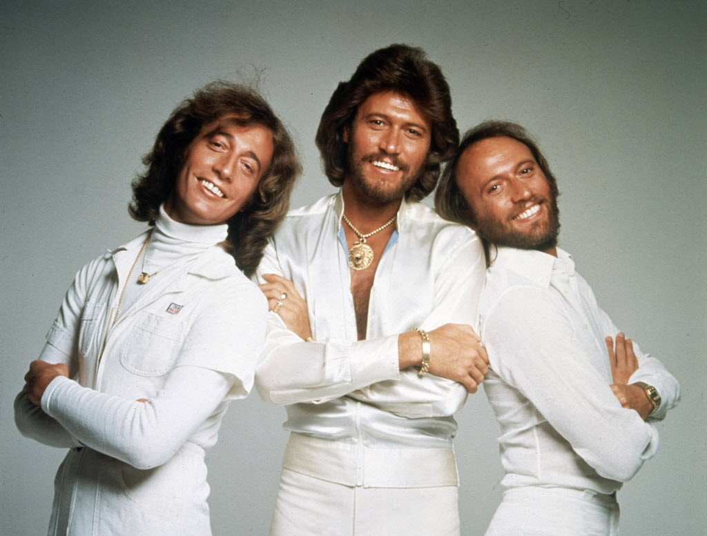
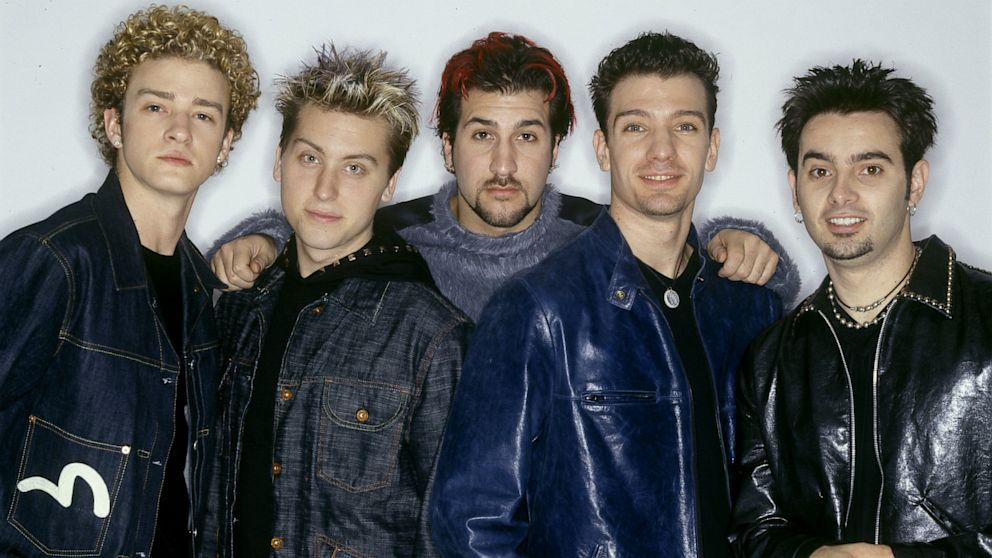
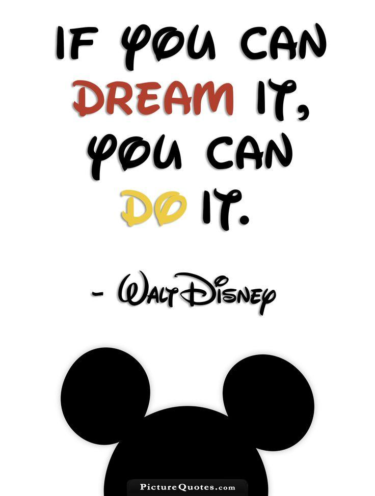

Lessons Learned From N Open Source Projects
Chris Oakman
@oakmac1
chrisoakman.com
Shaun LeBron
@shaunlebron
shaunlebron.github.io
Chris Oakman
@oakmac1
chrisoakman.com
Shaun LeBron
@shaunlebron
shaunlebron.github.io
Chris Oakman
chrisoakman.com
Educate and Inspire
You are legally allowed to view, modify, run, and share software code.


Sort files alphabetically on a USB drive
My car stereo supports playing mp3 files off of a USB thumbdrive. Unfortunately, it doesn't always sort files and folders alphabetically.
The purpose of this project is to find a fix for this problem.
Python implementation of Parinfer
Parinfer is a novel way of editing LISP code that infers code structure from indentation.
Python is a popular programming language used by many text editors for plugins and extensions.
Having a Parinfer implementation written as a Python library opens the door for more text editors to use Parinfer.

Chris Oakman
chrisoakman.com